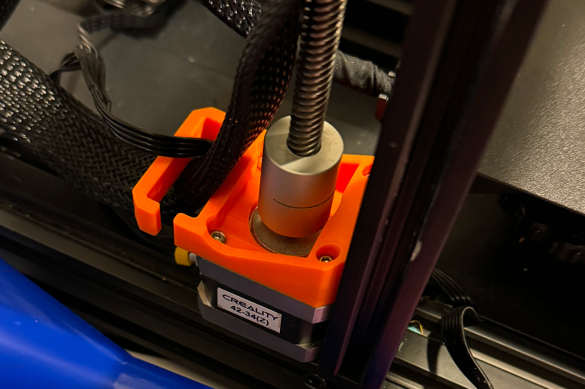

3-D Printing
3-D Printing has been a hobby of mine ever since I started using the printers at WPI to create robot parts. I started out by learning to help how to maintain the print farm in the Robotics lab at WPI. Soon, I had bought my own Ender 3 to play with and upgrading this printer has allowed it to stay reliable for many years, even to this day. The inspiration for my love of 3-D printing came from being able to tinker with my own printer, constantly adding features or automating tasks. Since getting the printer I have:
- Modified & Built custom firmware for the printer, allowing for expanded functionality and upgrades
- Added unified auto bed leveling using a BLTouch kit to probe the bed
- Upgraded the mainboard for quieter stepper drivers and a 32-bit interface
- Designed and printed custom Z axis stepper motor mounts for better stability
- Upgraded to dual Z axis for better stability
- Upgraded to a direct drive extruder
- Added a Raspberry Pi loaded with OctoPrint for cloud printing and monitoring
I have also used the printer to create many useful items around the house, such as a custom phone stand, a custom Arduino case, and custom tool storage.
